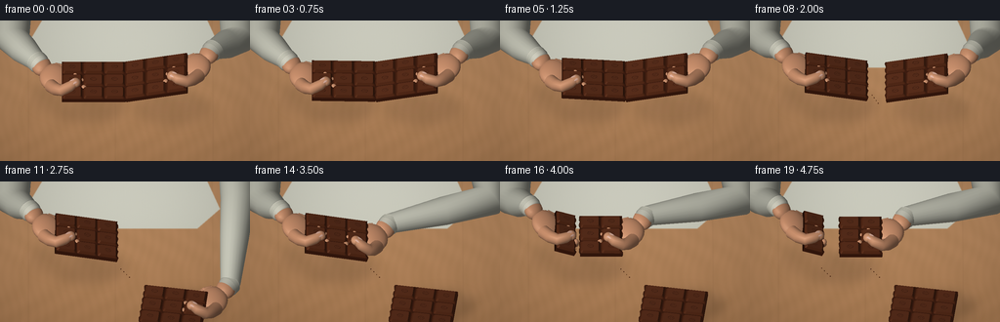
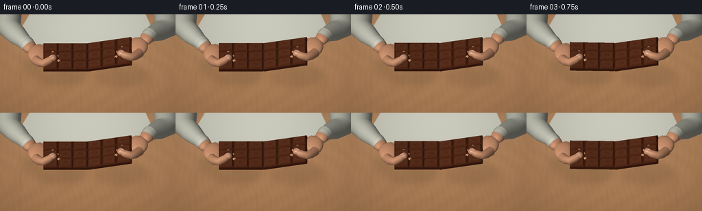
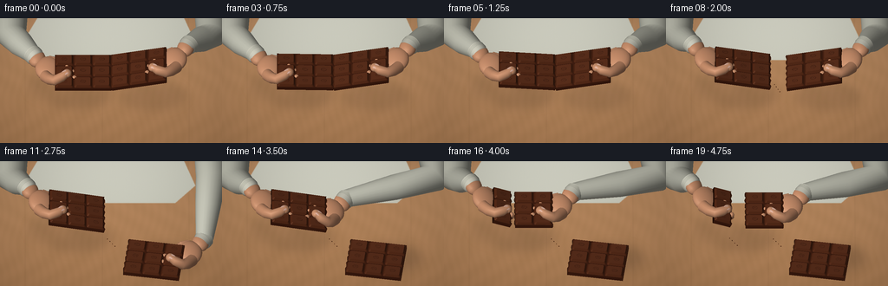

CODING AGENTS AS PIXEL WORLD MODELS
traex/GPT-6.1-Sol · motion_rationality_0010
点击播放 · 原生 RGB 像素
此结果可播放，但该运行尚未通过最终提交审核。页面展示不代表评测通过。
逐轮保存的候选
回放视频、检查图与代码变化。
每份候选均可单独播放。实际图片检查记录在下方工具轨迹中。
候选 01播放与检查图
点击播放 · 原生 RGB 像素


展开代码变化
--- 上一保存版本
+++ 本次保存版本
@@ -0,0 +1,271 @@
+import numpy as np
+from PIL import Image, ImageDraw, ImageFilter
+from pathlib import Path
+import math
+import artifact_io
+
+ROOT=Path(__file__).resolve().parent
+S=3; W=256*S; H=144*S
+rng=np.random.default_rng(24)
+# A small, self-contained triangle renderer. No assets or external render engine.
+UP=np.array([0.,.78,.626]); DEP=np.array([0.,-.626,.78]); SCALE=24*S
+LIGHT=np.array([-.45,-.35,.82]); LIGHT/=np.linalg.norm(LIGHT)
+
+class Renderer:
+ def __init__(self,bg):
+ self.img=np.asarray(bg,dtype=np.float32).copy(); self.depth=np.full((H,W),-1e6,np.float32)
+ def mesh(self,v,faces,color,normals=None,rough=.5):
+ v=np.asarray(v,float); f=np.asarray(faces,int)
+ p=np.empty((len(v),3)); p[:,0]=W/2+v[:,0]*SCALE; p[:,1]=H*.52-((v-np.array([0,0,1.]))@UP)*SCALE; p[:,2]=v@DEP
+ if normals is None:
+ normals=np.zeros_like(v)
+ fn=np.cross(v[f[:,1]]-v[f[:,0]],v[f[:,2]]-v[f[:,0]])
+ for k in range(3): np.add.at(normals,f[:,k],fn)
+ normals/=np.maximum(np.linalg.norm(normals,axis=1)[:,None],1e-8)
+ diff=np.maximum(normals@LIGHT,0)
+ half=LIGHT+DEP; half/=np.linalg.norm(half)
+ spec=np.maximum(normals@half,0)**(30 if rough<.6 else 12)
+ col=np.asarray(color)[None,:]*(.43+.58*diff[:,None])+spec[:,None]*(22 if rough<.6 else 7)
+ # warm bounced light from the oak tabletop
+ col+=np.maximum(-normals[:,2],0)[:,None]*np.array([9,4,1])
+ for tri in f:
+ q=p[tri]; c=col[tri]
+ x0=max(0,int(np.floor(q[:,0].min()))); x1=min(W-1,int(np.ceil(q[:,0].max())))
+ y0=max(0,int(np.floor(q[:,1].min()))); y1=min(H-1,int(np.ceil(q[:,1].max())))
+ if x1<x0 or y1<y0: continue
+ den=(q[1,1]-q[2,1])*(q[0,0]-q[2,0])+(q[2,0]-q[1,0])*(q[0,1]-q[2,1])
+ if abs(den)<1e-7: continue
+ yy,xx=np.mgrid[y0:y1+1,x0:x1+1]
+ a=((q[1,1]-q[2,1])*(xx-q[2,0])+(q[2,0]-q[1,0])*(yy-q[2,1]))/den
+ b=((q[2,1]-q[0,1])*(xx-q[2,0])+(q[0,0]-q[2,0])*(yy-q[2,1]))/den; d=1-a-b
+ z=a*q[0,2]+b*q[1,2]+d*q[2,2]
+ mask=(a>=-.001)&(b>=-.001)&(d>=-.001)&(z>self.depth[y0:y1+1,x0:x1+1])
+ if not mask.any(): continue
+ colors=a[:,:,None]*c[0]+b[:,:,None]*c[1]+d[:,:,None]*c[2]
+ self.img[y0:y1+1,x0:x1+1][mask]=colors[mask]; self.depth[y0:y1+1,x0:x1+1][mask]=z[mask]
+
+def RY(a):
+ c=np.cos(a); s=np.sin(a); return np.array([[c,0,s],[0,1,0],[-s,0,c]])
+def RZ(a):
+ c=np.cos(a); s=np.sin(a); return np.array([[c,-s,0],[s,c,0],[0,0,1]])
+def xform(v,M,off): return np.asarray(v)@M.T+off
+
+def ellipsoid(r,center,radii,col,M=np.eye(3),resolution=16,rough=.55):
+ n=resolution; v=[]; norm=[]; faces=[]
+ for j in range(n//2+1):
+ ph=math.pi*j/(n//2)
+ for i in range(n):
+ th=2*math.pi*i/n; a=np.array([math.sin(ph)*math.cos(th),math.sin(ph)*math.sin(th),math.cos(ph)])
+ v.append(M@(a*np.array(radii))+center); nn=a/np.array(radii); nn/=np.linalg.norm(nn); norm.append(M@nn)
+ for j in range(n//2):
+ for i in range(n):
+ a=j*n+i;b=j*n+(i+1)%n;c=(j+1)*n+i;d=(j+1)*n+(i+1)%n
+ faces.extend([(a,c,b),(b,c,d)])
+ r.mesh(v,faces,col,np.array(norm),rough)
+
+def tube(r,points,radii,col,sides=12,rough=.7):
+ pts=np.array(points); v=[]; faces=[]; ns=[]
+ for j,p in enumerate(pts):
+ tangent=pts[min(j+1,len(pts)-1)]-pts[max(0,j-1)]; tangent/=np.linalg.norm(tangent)
+ a=np.cross(tangent,np.array([0,0,1.]));
+ if np.linalg.norm(a)<.01: a=np.cross(tangent,[0,1,0])
+ a/=np.linalg.norm(a); b=np.cross(tangent,a)
+ for i in range(sides):
+ ang=2*np.pi*i/sides; nn=a*np.cos(ang)+b*np.sin(ang); v.append(p+radii[j]*nn); ns.append(nn)
+ for j in range(len(pts)-1):
+ for i in range(sides):
+ a=j*sides+i;b=j*sides+(i+1)%sides;c=(j+1)*sides+i;d=(j+1)*sides+(i+1)%sides
+ faces.extend([(a,b,c),(b,d,c)])
+ # ends are capped
+ v.extend([pts[0],pts[-1]]);ns.extend([-tangent,tangent])
+ for i in range(sides):
+ faces.extend([(len(v)-2,(i+1)%sides,i),(len(v)-1,(len(pts)-1)*sides+i,(len(pts)-1)*sides+(i+1)%sides)])
+ r.mesh(v,faces,col,np.array(ns),rough)
+
+SKIN=(207,148,112)
+def hand(r,side,mat,off):
+ # hand coordinates are the left-handed grip; mirrored for right grip.
+ def tr(p): return mat@(np.array(p)*np.array([side,1,1]))+off
+ mirror=np.diag([side,1,1]); mm=mat@mirror
+ palm=np.array([-3.01,.48,-.38]); wrist=np.array([-3.57,1.15,-.44])
+ ellipsoid(r,tr(palm),[.65,.72,.32],SKIN,mm,resolution=24)
+ ellipsoid(r,tr(wrist),[.42,.5,.30],SKIN,mm,resolution=20)
+ # Four fingers curl under the bar, each with an individually shaped knuckle.
+ for i,(y,l,rad) in enumerate([(-.03,1.1,.18),(.36,1.27,.19),(.74,1.17,.18),(1.07,.9,.155)]):
+ pts=[[-2.98,y,-.38],[-2.67,y-.10,-.34],[-2.43,y-.25,-.40],[-2.98+l,y-.46,-.47],[-2.99+l,y-.67,-.24],[-3.03+l,y-.7,-.08]]
+ tube(r,[tr(p) for p in pts],[rad*1.12,rad,rad*.95,rad*.87,rad*.8,rad*.60],SKIN,14,.67)
+ ellipsoid(r,tr(pts[-1]),[rad*.7,rad*.72,rad*.7],SKIN,mm,16)
+ ellipsoid(r,tr(pts[1]),[rad*1.04,rad*1.02,rad],(210,150,114),mm,16)
+ # The thumb pad presses onto the raised top surface.
+ tp=[[-3.17,-.06,-.28],[-2.95,-.45,-.03],[-2.69,-.67,.16],[-2.36,-.56,.29],[-2.12,-.37,.32]]
+ tube(r,[tr(p) for p in tp],[.29,.27,.245,.225,.17],SKIN,18,.5)
+ ellipsoid(r,tr(tp[-1]),[.215,.23,.17],SKIN,mm,24)
+ # flattened ivory-pink thumbnail, rounded free edge and nail bed
+ nailM=mm@RZ(.60)
+ ellipsoid(r,tr([-2.21,-.43,.459]),[.215,.143,.027],(231,185,166),nailM,24,.25)
+ ellipsoid(r,tr([-2.105,-.353,.460]),[.062,.122,.014],(241,208,186),nailM,16,.4)
+ # gentle crease on thumb joint
+ for delta in [0,.055]:
+ pts=[[-2.65+delta,-.72,.30],[-2.59+delta,-.63,.374],[-2.59+delta,-.55,.382]]
+ tube(r,[tr(p) for p in pts],[.007,.009,.004],(160,104,77),7)
+ return tr(wrist)
+
+def rounded_ring(x0,x1,y0,y1,z,rad):
+ vs=[]
+ for cx,cy,start in [(x1-rad,y1-rad,0),(x0+rad,y1-rad,90),(x0+rad,y0+rad,180),(x1-rad,y0+rad,270)]:
+ for ang in np.linspace(start,start+90,5):
+ a=math.radians(ang);vs.append([cx+rad*np.cos(a),cy+rad*np.sin(a),z])
+ return vs
+
+def bevel(r,x0,x1,y0,y1,z,M,off):
+ rings=[rounded_ring(x0,x1,y0,y1,z,.075),rounded_ring(x0+.07,x1-.07,y0+.07,y1-.07,z+.105,.065)]
+ v=rings[0]+rings[1]; n=len(rings[0]); fs=[]
+ # sides with independent vertices to retain crisp molded edge
+ for i in range(n):
+ a=i;b=(i+1)%n; q=[v[a],v[b],v[b+n],v[a+n]]
+ r.mesh(xform(q,M,off),[(0,1,2),(0,2,3)],(87,43,24),rough=.45)
+ r.mesh(xform(rings[1]+[[(x0+x1)/2,(y0+y1)/2,z+.105]],M,off),[(n,i,(i+1)%n) for i in range(n)],(91,47,28),np.tile(M@np.array([0,0,1]),(n+1,1)),.4)
+ # subtle pressed cocoa-bean emblem, same chocolate rather than lettering
+ xc=(x0+x1)/2;yc=(y0+y1)/2
+ pts=[]
+ for a in np.linspace(0,2*np.pi,18,endpoint=False): pts.append([xc+.13*np.cos(a),yc+.085*np.sin(a),z+.106])
+ tube(r,xform(pts+[pts[0]],M,off),[.008]*19,(73,35,20),6,.7)
+ tube(r,xform([[xc-.09,yc-.02,z+.108],[xc,yc+.012,z+.108],[xc+.09,yc+.02,z+.108]],M,off),[.007]*3,(74,36,22),6)
+
+# Immutable fracture profiles match on the two sides of each break.
+def edge(x,y):
+ if abs(x)<.01 or abs(x+1.8)<.01: return x+.035*np.sin(18*y)+.012*np.sin(37*y)
+ return x
+
+def chocolate(r,a,b,M,off,exposed=False):
+ ys=np.linspace(-1.03,1.03,25); v=[]; fs=[]
+ for y in ys:
+ v.extend([[edge(a,y),y,-.20],[edge(b,y),y,-.20],[edge(a,y),y,0],[edge(b,y),y,0]])
+ for j in range(len(ys)-1):
+ k=4*j;l=k+4
+ fs.extend([(k+2,k+3,l+3),(k+2,l+3,l+2),(k,l,k+1),(k+1,l,l+1)])
+ r.mesh(xform(v,M,off),fs,(64,30,17),rough=.57)
+ for boundary,ia in [(a,0),(b,1)]:
+ for j in range(len(ys)-1):
+ k=4*j+ia;l=k+4
+ col=(106,61,37) if (abs(boundary)<.01 or abs(boundary+1.8)<.01) and exposed else (68,32,17)
+ r.mesh(xform([v[k],v[l],v[l+2],v[k+2]],M,off),[(0,1,2),(0,2,3)],col,rough=.85)
+ for yy,j in [(-1.03,0),(1.03,len(ys)-1)]:
+ k=j*4;r.mesh(xform([v[k],v[k+1],v[k+3],v[k+2]],M,off),[(0,1,2),(0,2,3)],(78,35,19),rough=.6)
+ for ix in range(6):
+ x=-2.7+ix*.9
+ if x<a-.02 or x+.9>b+.02: continue
+ for iy in range(3):
+ y=-1.03+iy*(2.06/3)
+ bevel(r,x+.025,x+.875,y+.023,y+2.06/3-.023,.005,M,off)
+ # tiny crumb inclusions in the freshly exposed cross section
+ if exposed:
+ for boundary in [a,b]:
+ if abs(boundary)>.01 and abs(boundary+1.8)>.01: continue
+ for j in range(15):
+ y=-.93+j*.13; z=-.12+.055*np.sin(j*5)
+ p=[edge(boundary,y)+(0.005 if boundary==b else -.005),y,z]
+ ellipsoid(r,M@p+off,[.016,.026,.015],(132,81,49),M,8,.8)
+
+def ease(x): x=np.clip(x,0,1);return x*x*(3-2*x)
+def mix(a,b,t):return np.array(a)*(1-t)+np.array(b)*t
+
+# Tabletop with stable, fine photographic-like wood grain and soft rear wall.
+yy,xx=np.mgrid[:H,:W];noise=rng.normal(0,1,(H,W));
+grain=1.8*np.sin(xx*.055+6*np.sin(yy*.016))+1.2*np.sin(xx*.23+3*np.sin(yy*.027))+noise*.48
+base=np.zeros((H,W,3),float)
+for c,value in enumerate([167,122,82]): base[:,:,c]=value+grain*(1 if c==0 else .72)+13*(1-yy/H)
+# softly lit wood planks
+for line in [28,117,217]:
+ dist=np.abs(xx-line*S-3*np.sin(yy*.005));base-=np.exp(-dist*.9)[:,:,None]*np.array([9,7,5])
+# Static torso, cropped out above the shoulders.
+bg=Image.fromarray(np.uint8(np.clip(base,0,255)))
+d=ImageDraw.Draw(bg)
+def poly(points,fill):d.polygon([(int(x*S),int(y*S)) for x,y in points],fill=fill)
+poly([(55,-20),(203,-20),(225,28),(202,48),(57,48),(29,23)],(201,201,187))
+# Sweater's subtle knit follows a rounded chest rather than looking flat.
+a=np.array(bg).astype(float);mask=np.zeros((H,W),np.uint8);md=ImageDraw.Draw(Image.fromarray(mask))
+mi=Image.new('L',(W,H));ImageDraw.Draw(mi).polygon([(55*S,-20*S),(203*S,-20*S),(225*S,28*S),(202*S,48*S),(57*S,48*S),(29*S,23*S)],fill=255);mask=np.array(mi)>0
+knit=1.8*np.sin(xx*1.7)+1.1*np.sin(yy*1.4+np.sin(xx*.3));shade=12*np.cos((xx-W/2)/W*3)-.08*yy
+for c in range(3):a[:,:,c][mask]+= (knit+shade)[mask]
+bg=Image.fromarray(np.uint8(np.clip(a,0,255))).filter(ImageFilter.GaussianBlur(.35*S))
+
+frames=[]
+for f in range(20):
+ # First strain, crisp snap, then a continuous separation of the two halves.
+ t=f/4
+ bend=ease((f-2)/3)*.085
+ separation=ease((f-5)/3)
+ leftM=RY(bend+.13*separation);rightM=RY(-bend-.14*separation)
+ leftOff=np.array([-.32*separation,.05*separation,1.90+.04*np.sin(f*.38)])
+ rightOff=np.array([.44*separation,-.03*separation,1.90])
+ # Right hand lowers its half to the table, releases it, and returns for a second break.
+ lay=ease((f-8)/3)
+ rightM=RY((-.225)*(1-lay))@RZ(-.14*lay)
+ rightOff=mix(rightOff,[.72,-2.05,.23],lay)
+ leftOff=np.array([-.32,.05,1.91]) if f>=9 else leftOff
+ leftM=RY(.215 if f>=9 else bend+.13*separation)
+ # second break along the next molded groove on the retained half
+ snap2=ease((f-14)/2); gap2=ease((f-15)/3)
+ seam=np.array([-1.8,0,0])
+ piece1M=leftM@RY(.17*snap2)
+ piece2M=leftM@RY(-.21*snap2)
+ pivot=leftM@seam+leftOff
+ piece1Off=pivot-piece1M@seam+np.array([-.12*gap2,.02,0])
+ piece2Off=pivot-piece2M@seam+np.array([.56*gap2,-.05*gap2,.02])
+ # All finger positions are attached to the rigid piece they actually grip.
+ lhM=piece1M if f>=14 else leftM;lhOff=piece1Off if f>=14 else leftOff
+ rhM=rightM;rhOff=rightOff
+ reach=ease((f-11)/3)
+ # a right-hand grip anchored at the right edge of the retained smaller piece
+ targetOff=piece2Off+piece2M@np.array([-2.7,0,0])
+ if f>=11:
+ angle=(-.225)*(1-lay)*(1-reach)+( .215-.21*snap2)*reach
+ rhM=RY(angle)
+ rhOff=mix(rightOff+np.array([0,0,.55*ease((f-11)/1)]),targetOff,reach)
+ # soft shadows generated on the table, tracking hands and pieces
+ shadow=Image.new('L',(W,H));sd=ImageDraw.Draw(shadow)
+ def sh(x,y,rx,ry,opacity):
+ px=W/2+x*SCALE;py=H*.52-((np.array([0,y,0])-np.array([0,0,1]))@UP)*SCALE
+ sd.ellipse((px-rx*SCALE,py-ry*SCALE,px+rx*SCALE,py+ry*SCALE),fill=opacity)
+ sh(-1.6,.05,1.65,.65,65);sh(2+rightOff[0],rightOff[1],1.6,.7,85 if lay>.8 else 52)
+ sh(-3,.6,1,.7,43)
+ shadow=shadow.filter(ImageFilter.GaussianBlur(5*S))
+ arr=np.array(bg).astype(float);arr*=1-np.array(shadow)[:,:,None]/255*.43
+ r=Renderer(np.uint8(arr))
+ # sleeves remain connected to the wrists throughout both actions
+ for side,mat,off in [(1,lhM,lhOff),(-1,rhM,rhOff)]:
+ wrist=mat@(np.array([-3.57,1.15,-.44])*np.array([side,1,1]))+off
+ elbow=np.array([-4.8*side,2.8,1.2]); upper=np.array([-4.8*side,4.5,1.25])
+ cuff=wrist+np.array([-.20*side,.3,-.05])
+ tube(r,[upper,elbow,mix(elbow,cuff,.45),cuff],[.82,.73,.62,.43],(202,202,187),24,.95)
+ # ribbed cuffs
+ axis=wrist-cuff;axis/=np.linalg.norm(axis)
+ tube(r,[cuff-.06*axis,cuff+.15*axis,wrist],[.455,.455,.40],(216,214,198),24,.95)
+ for k in range(5):
+ center=cuff+axis*(k*.043)
+ tube(r,[center-axis*.008,center+axis*.008],[.457,.457],(191,192,176),24,.95)
+ # Chocolate and hands share the same depth buffer, allowing true wrapped grips.
+ if f<14:
+ chocolate(r,-2.7,0,leftM,leftOff,f>=6)
+ else:
+ chocolate(r,-2.7,-1.8,piece1M,piece1Off,True)
+ chocolate(r,-1.8,0,piece2M,piece2Off,True)
+ chocolate(r,0,2.7,rightM,rightOff,f>=6)
+ hand(r,1,lhM,lhOff);hand(r,-1,rhM,rhOff)
+ # a few minute crumbs fall after each snap; no unexplained floating particles.
+ for event,x,ys,z0 in [(6,0,.0,1.88),(16,-2.1,.05,1.9)]:
+ dt=(f-event)/4
+ if dt>=0:
+ for j in range(4):
+ vx=(j-1.5)*.17; z=max(.022,z0-3.9*dt*dt)
+ pos=[x+vx*min(dt,.72),ys-.15*j,z]
+ ellipsoid(r,np.array(pos),[.022+.008*(j%2),.025,.018],(91,48,25),RY(j),8,.9)
+ # optical antialiasing, mild grain and a soft peripheral vignette
+ out=np.clip(r.img,0,255)
+ vign=1-.075*((xx-W/2)/(W/2))**2-.055*((yy-H/2)/(H/2))**2
+ out=out*vign[:,:,None]+rng.normal(0,.32,out.shape)
+ im=Image.fromarray(np.uint8(np.clip(out,0,255))).resize((256,144),Image.Resampling.LANCZOS)
+ frames.append(np.asarray(im))
+ print('frame',f,flush=True)
+artifact_io.save(np.stack(frames),ROOT)
候选 02播放与检查图
点击播放 · 原生 RGB 像素

展开代码变化
--- 上一保存版本 +++ 本次保存版本 @@ -202,7 +202,7 @@ # Right hand lowers its half to the table, releases it, and returns for a second break. lay=ease((f-8)/3) rightM=RY((-.225)*(1-lay))@RZ(-.14*lay) - rightOff=mix(rightOff,[.72,-2.05,.23],lay) + rightOff=mix(rightOff,[.72,-1.20,.23],lay) leftOff=np.array([-.32,.05,1.91]) if f>=9 else leftOff leftM=RY(.215 if f>=9 else bend+.13*separation) # second break along the next molded groove on the retained half
可观测工具轨迹
实际执行的命令与返回图片。
命令 1exit 0
/bin/bash -lc "ls -la && cat prompt.txt && printf '\\n---RULES---\\n' && cat GENERATION_RULES.md && printf '\\n---SPEC---\\n' && cat task_spec.json"
命令 2exit 0
/bin/bash -lc "cat artifact_io.py && python - <<'PY' import importlib.util for s in ['numpy','PIL','cv2','scipy']: print(s, bool(importlib.util.find_spec(s))) PY"
命令 3exit 1
/bin/bash -lc "cat > generate.py <<'PY'
import numpy as np
from PIL import Image, ImageDraw, ImageFilter
from pathlib import Path
import math
import artifact_io
ROOT=Path(__file__).resolve().parent
S=3; W=256*S; H=144*S
rng=np.random.default_rng(24)
# A small, self-contained triangle renderer. No assets or external render engine.
UP=np.array([0.,.78,.626]); DEP=np.array([0.,-.626,.78]); SCALE=24*S
LIGHT=np.array([-.45,-.35,.82]); LIGHT/=np.linalg.norm(LIGHT)
class Renderer:
def __init__(self,bg):
self.img=np.asarray(bg,dtype=np.float32).copy(); self.depth=np.full((H,W),-1e6,np.float32)
def mesh(self,v,faces,color,normals=None,rough=.5):
v=np.asarray(v,float); f=np.asarray(faces,int)
p=np.empty((len(v),3)); p[:,0]=W/2+v[:,0]*SCALE; p[:,1]=H*.52-((v-np.array([0,0,1.]))@UP)*SCALE; p[:,2]=v@DEP
if normals is None:
normals=np.zeros_like(v)
fn=np.cross(v[f[:,1]]-v[f[:,0]],v[f[:,2]]-v[f[:,0]])
for k in range(3): np.add.at(normals,f[:,k],fn)
normals/=np.maximum(np.linalg.norm(normals,axis=1)[:,None],1e-8)
diff=np.maximum(normals@LIGHT,0)
half=LIGHT+DEP; half/=np.linalg.norm(half)
spec=np.maximum(normals@half,0)**(30 if rough<.6 else 12)
col=np.asarray(color)[None,:]*(.43+.58*diff[:,None])+spec[:,None]*(22 if rough<.6 else 7)
# warm bounced light from the oak tabletop
col+=np.maximum(-normals[:,2],0)[:,None]*np.array([9,4,1])
for tri in f:
q=p[tri]; c=col[tri]
x0=max(0,int(np.floor(q[:,0].min()))); x1=min(W-1,int(np.ceil(q[:,0].max())))
y0=max(0,int(np.floor(q[:,1].min()))); y1=min(H-1,int(np.ceil(q[:,1].max())))
if x1<x0 or y1<y0: continue
den=(q[1,1]-q[2,1])*(q[0,0]-q[2,0])+(q[2,0]-q[1,0])*(q[0,1]-q[2,1])
if abs(den)<1e-7: continue
yy,xx=np.mgrid[y0:y1+1,x0:x1+1]
a=((q[1,1]-q[2,1])*(xx-q[2,0])+(q[2,0]-q[1,0])*(yy-q[2,1]))/den
b=((q[2,1]-q[0,1])*(xx-q[2,0])+(q[0,0]-q[2,0])*(yy-q[2,1]))/den; d=1-a-b
z=a*q[0,2]+b*q[1,2]+d*q[2,2]
mask=(a>=-.001)&(b>=-.001)&(d>=-.001)&(z>self.depth[y0:y1+1,x0:x1+1])
if not mask.any(): continue
colors=a[:,:,None]*c[0]+b[:,:,None]*c[1]+d[:,:,None]*c[2]
self.img[y0:y1+1,x0:x1+1][mask]=colors[mask]; self.depth[y0:y1+1,x0:x1+1][mask]=z[mask]
def RY(a):
c=np.cos(a); s=np.sin(a); return np.array([[c,0,s],[0,1,0],[-s,0,c]])
def RZ(a):
c=np.cos(a); s=np.sin(a); return np.array([[c,-s,0],[s,c,0],[0,0,1]])
def xform(v,M,off): return np.asarray(v)@M.T+off
def ellipsoid(r,center,radii,col,M=np.eye(3),resolution=16,rough=.55):
n=resolution; v=[]; norm=[]; faces=[]
for j in range(n//2+1):
ph=math.pi*j/(n//2)
for i in range(n):
th=2*math.pi*i/n; a=np.array([math.sin(ph)*math.cos(th),math.sin(ph)*math.sin(th),math.cos(ph)])
v.append(M@(a*np.array(radii))+center); nn=a/np.array(radii); nn/=np.linalg.norm(nn); norm.append(M@nn)
for j in range(n//2):
for i in range(n):
a=j*n+i;b=j*n+(i+1)%n;c=(j+1)*n+i;d=(j+1)*n+(i+1)%n
faces.extend([(a,c,b),(b,c,d)])
r.mesh(v,faces,col,np.array(norm),rough)
def tube(r,points,radii,col,sides=12,rough=.7):
pts=np.array(points); v=[]; faces=[]; ns=[]
for j,p in enumerate(pts):
tangent=pts[min(j+1,len(pts)-1)]-pts[max(0,j-1)]; tangent/=np.linalg.norm(tangent)
a=np.cross(tangent,np.array([0,0,1.]));
if np.linalg.norm(a)<.01: a=np.cross(tangent,[0,1,0])
a/=np.linalg.norm(a); b=np.cross(tangent,a)
for i in range(sides):
ang=2*np.pi*i/sides; nn=a*np.cos(ang)+b*np.sin(ang); v.append(p+radii[j]*nn); ns.append(nn)
for j in range(len(pts)-1):
for i in range(sides):
a=j*sides+i;b=j*sides+(i+1)%sides;c=(j+1)*sides+i;d=(j+1)*sides+(i+1)%sides
faces.extend([(a,b,c),(b,d,c)])
# ends are capped
v.extend([pts[0],pts[-1]]);ns.extend([-tangent,tangent])
for i in range(sides):
faces.extend([(len(v)-2,(i+1)%sides,i),(len(v)-1,(len(pts)-1)*sides+i,(len(pts)-1)*sides+(i+1)%sides)])
r.mesh(v,faces,col,np.array(ns),rough)
SKIN=(207,148,112)
def hand(r,side,mat,off):
# hand coordinates are the left-handed grip; mirrored for right grip.
def tr(p): return mat@(np.array(p)*np.array([side,1,1]))+off
mirror=np.diag([side,1,1]); mm=mat@mirror
palm=np.array([-3.01,.48,-.38]); wrist=np.array([-3.57,1.15,-.44])
ellipsoid(r,tr(palm),[.65,.72,.32],SKIN,mm,resolution=24)
ellipsoid(r,tr(wrist),[.42,.5,.30],SKIN,mm,resolution=20)
# Four fingers curl under the bar, each with an individually shaped knuckle.
for i,(y,l,rad) in enumerate([(-.03,1.1,.18),(.36,1.27,.19),(.74,1.17,.18),(1.07,.9,.155)]):
pts=[[-2.98,y,-.38],[-2.67,y-.10,-.34],[-2.43,y-.25,-.40],[-2.98+l,y-.46,-.47],[-2.99+l,y-.67,-.24],[-3.03+l,y-.7,-.08]]
tube(r,[tr(p) for p in pts],[rad*1.12,rad,rad*.95,rad*.87,rad*.8,rad*.60],SKIN,14,.67)
ellipsoid(r,tr(pts[-1]),[rad*.7,rad*.72,rad*.7],SKIN,mm,16)
ellipsoid(r,tr(pts[1]),[rad*1.04,rad*1.02,rad],(210,150,114),mm,16)
# The thumb pad presses onto the raised top surface.
tp=[[-3.17,-.06,-.28],[-2.95,-.45,-.03],[-2.69,-.67,.16],[-2.36,-.56,.29],[-2.12,-.37,.32]]
tube(r,[tr(p) for p in tp],[.29,.27,.245,.225,.17],SKIN,18,.5)
ellipsoid(r,tr(tp[-1]),[.215,.23,.17],SKIN,mm,24)
# flattened ivory-pink thumbnail, rounded free edge and nail bed
nailM=mm@RZ(.60)
ellipsoid(r,tr([-2.21,-.43,.459]),[.215,.143,.027],(231,185,166),nailM,24,.25)
ellipsoid(r,tr([-2.105,-.353,.460]),[.062,.122,.014],(241,208,186),nailM,16,.4)
# gentle crease on thumb joint
for delta in [0,.055]:
pts=[[-2.65+delta,-.72,.30],[-2.59+delta,-.63,.374],[-2.59+delta,-.55,.382]]
tube(r,[tr(p) for p in pts],[.007,.009,.004],(160,104,77),7)
return tr(wrist)
def rounded_ring(x0,x1,y0,y1,z,rad):
vs=[]
for cx,cy,start in [(x1-rad,y1-rad,0),(x0+rad,y1-rad,90),(x0+rad,y0+rad,180),(x1-rad,y0+rad,270)]:
for ang in np.linspace(start,start+90,5):
a=math.radians(ang);vs.append([cx+rad*np.cos(a),cy+rad*np.sin(a),z])
return vs
def bevel(r,x0,x1,y0,y1,z,M,off):
rings=[rounded_ring(x0,x1,y0,y1,z,.075),rounded_ring(x0+.07,x1-.07,y0+.07,y1-.07,z+.105,.065)]
v=rings[0]+rings[1]; n=len(rings[0]); fs=[]
# sides with independent vertices to retain crisp molded edge
for i in range(n):
a=i;b=(i+1)%n; q=[v[a],v[b],v[b+n],v[a+n]]
r.mesh(xform(q,M,off),[(0,1,2),(0,2,3)],(87,43,24),rough=.45)
r.mesh(xform(rings[1]+[[(x0+x1)/2,(y0+y1)/2,z+.105]],M,off),[(n,i,(i+1)%n) for i in range(n)],(91,47,28),np.tile(M@np.array([0,0,1]),(n+1,1)),.4)
# subtle pressed cocoa-bean emblem, same chocolate rather than lettering
xc=(x0+x1)/2;yc=(y0+y1)/2
pts=[]
for a in np.linspace(0,2*np.pi,18): pts.append([xc+.13*np.cos(a),yc+.085*np.sin(a),z+.106])
tube(r,xform(pts+[pts[0]],M,off),[.008]*19,(73,35,20),6,.7)
tube(r,xform([[xc-.09,yc-.02,z+.108],[xc,yc+.012,z+.108],[xc+.09,yc+.02,z+.108]],M,off),[.007]*3,(74,36,22),6)
# Immutable fracture profiles match on the two sides of each break.
def edge(x,y):
if abs(x)<.01 or abs(x+1.8)<.01: return x+.035*np.sin(18*y)+.012*np.sin(37*y)
return x
def chocolate(r,a,b,M,off,exposed=False):
ys=np.linspace(-1.03,1.03,25); v=[]; fs=[]
for y in ys:
v.extend([[edge(a,y),y,-.20],[edge(b,y),y,-.20],[edge(a,y),y,0],[edge(b,y),y,0]])
for j in range(len(ys)-1):
k=4*j;l=k+4
fs.extend([(k+2,k+3,l+3),(k+2,l+3,l+2),(k,l,k+1),(k+1,l,l+1)])
r.mesh(xform(v,M,off),fs,(64,30,17),rough=.57)
for boundary,ia in [(a,0),(b,1)]:
for j in range(len(ys)-1):
k=4*j+ia;l=k+4
col=(106,61,37) if (abs(boundary)<.01 or abs(boundary+1.8)<.01) and exposed else (68,32,17)
r.mesh(xform([v[k],v[l],v[l+2],v[k+2]],M,off),[(0,1,2),(0,2,3)],col,rough=.85)
for yy,j in [(-1.03,0),(1.03,len(ys)-1)]:
k=j*4;r.mesh(xform([v[k],v[k+1],v[k+3],v[k+2]],M,off),[(0,1,2),(0,2,3)],(78,35,19),rough=.6)
for ix in range(6):
x=-2.7+ix*.9
if x<a-.02 or x+.9>b+.02: continue
for iy in range(3):
y=-1.03+iy*(2.06/3)
bevel(r,x+.025,x+.875,y+.023,y+2.06/3-.023,.005,M,off)
# tiny crumb inclusions in the freshly exposed cross section
if exposed:
for boundary in [a,b]:
if abs(boundary)>.01 and abs(boundary+1.8)>.01: continue
for j in range(15):
y=-.93+j*.13; z=-.12+.055*np.sin(j*5)
p=[edge(boundary,y)+(0.005 if boundary==b else -.005),y,z]
ellipsoid(r,M@p+off,[.016,.026,.015],(132,81,49),M,8,.8)
def ease(x): x=np.clip(x,0,1);return x*x*(3-2*x)
def mix(a,b,t):return np.array(a)*(1-t)+np.array(b)*t
# Tabletop with stable, fine photographic-like wood grain and soft rear wall.
yy,xx=np.mgrid[:H,:W];noise=rng.normal(0,1,(H,W));
grain=1.8*np.sin(xx*.055+6*np.sin(yy*.016))+1.2*np.sin(xx*.23+3*np.sin(yy*.027))+noise*.48
base=np.zeros((H,W,3),float)
for c,value in enumerate([167,122,82]): base[:,:,c]=value+grain*(1 if c==0 else .72)+13*(1-yy/H)
# softly lit wood planks
for line in [28,117,217]:
dist=np.abs(xx-line*S-3*np.sin(yy*.005));base-=np.exp(-dist*.9)[:,:,None]*np.array([9,7,5])
# Static torso, cropped out above the shoulders.
bg=Image.fromarray(np.uint8(np.clip(base,0,255)))
d=ImageDraw.Draw(bg)
def poly(points,fill):d.polygon([(int(x*S),int(y*S)) for x,y in points],fill=fill)
poly([(55,-20),(203,-20),(225,28),(202,48),(57,48),(29,23)],(201,201,187))
# Sweater's subtle knit follows a rounded chest rather than looking flat.
a=np.array(bg).astype(float);mask=np.zeros((H,W),np.uint8);md=ImageDraw.Draw(Image.fromarray(mask))
mi=Image.new('L',(W,H));ImageDraw.Draw(mi).polygon([(55*S,-20*S),(203*S,-20*S),(225*S,28*S),(202*S,48*S),(57*S,48*S),(29*S,23*S)],fill=255);mask=np.array(mi)>0
knit=1.8*np.sin(xx*1.7)+1.1*np.sin(yy*1.4+np.sin(xx*.3));shade=12*np.cos((xx-W/2)/W*3)-.08*yy
for c in range(3):a[:,:,c][mask]+= (knit+shade)[mask]
bg=Image.fromarray(np.uint8(np.clip(a,0,255))).filter(ImageFilter.GaussianBlur(.35*S))
frames=[]
for f in range(20):
# First strain, crisp snap, then a continuous separation of the two halves.
t=f/4
bend=ease((f-2)/3)*.085
separation=ease((f-5)/3)
leftM=RY(bend+.13*separation);rightM=RY(-bend-.14*separation)
leftOff=np.array([-.32*separation,.05*separation,1.90+.04*np.sin(f*.38)])
rightOff=np.array([.44*separation,-.03*separation,1.90])
# Right hand lowers its half to the table, releases it, and returns for a second break.
lay=ease((f-8)/3)
rightM=RY((-.225)*(1-lay))@RZ(-.14*lay)
rightOff=mix(rightOff,[.72,-2.05,.23],lay)
leftOff=np.array([-.32,.05,1.91]) if f>=9 else leftOff
leftM=RY(.215 if f>=9 else bend+.13*separation)
# second break along the next molded groove on the retained half
snap2=ease((f-14)/2); gap2=ease((f-15)/3)
seam=np.array([-1.8,0,0])
piece1M=leftM@RY(.17*snap2)
piece2M=leftM@RY(-.21*snap2)
pivot=leftM@seam+leftOff
piece1Off=pivot-piece1M@seam+np.array([-.12*gap2,.02,0])
piece2Off=pivot-piece2M@seam+np.array([.56*gap2,-.05*gap2,.02])
# All finger positions are attached to the rigid piece they actually grip.
lhM=piece1M if f>=14 else leftM;lhOff=piece1Off if f>=14 else leftOff
rhM=rightM;rhOff=rightOff
reach=ease((f-11)/3)
# a right-hand grip anchored at the right edge of the retained smaller piece
targetOff=piece2Off+piece2M@np.array([-2.7,0,0])
if f>=11:
angle=(-.225)*(1-lay)*(1-reach)+( .215-.21*snap2)*reach
rhM=RY(angle)
rhOff=mix(rightOff+np.array([0,0,.55*ease((f-11)/1)]),targetOff,reach)
# soft shadows generated on the table, tracking hands and pieces
shadow=Image.new('L',(W,H));sd=ImageDraw.Draw(shadow)
def sh(x,y,rx,ry,opacity):
px=W/2+x*SCALE;py=H*.52-((np.array([0,y,0])-np.array([0,0,1]))@UP)*SCALE
sd.ellipse((px-rx*SCALE,py-ry*SCALE,px+rx*SCALE,py+ry*SCALE),fill=opacity)
sh(-1.6,.05,1.65,.65,65);sh(2+rightOff[0],rightOff[1],1.6,.7,85 if lay>.8 else 52)
sh(-3,.6,1,.7,43)
shadow=shadow.filter(ImageFilter.GaussianBlur(5*S))
arr=np.array(bg).astype(float);arr*=1-np.array(shadow)[:,:,None]/255*.43
r=Renderer(np.uint8(arr))
# sleeves remain connected to the wrists throughout both actions
for side,mat,off in [(1,lhM,lhOff),(-1,rhM,rhOff)]:
wrist=mat@(np.array([-3.57,1.15,-.44])*np.array([side,1,1]))+off
elbow=np.array([-4.8*side,2.8,1.2]); upper=np.array([-4.8*side,4.5,1.25])
cuff=wrist+np.array([-.20*side,.3,-.05])
tube(r,[upper,elbow,mix(elbow,cuff,.45),cuff],[.82,.73,.62,.43],(202,202,187),24,.95)
# ribbed cuffs
axis=wrist-cuff;axis/=np.linalg.norm(axis)
tube(r,[cuff-.06*axis,cuff+.15*axis,wrist],[.455,.455,.40],(216,214,198),24,.95)
for k in range(5):
center=cuff+axis*(k*.043)
tube(r,[center-axis*.008,center+axis*.008],[.457,.457],(191,192,176),24,.95)
# Chocolate and hands share the same depth buffer, allowing true wrapped grips.
if f<14:
chocolate(r,-2.7,0,leftM,leftOff,f>=6)
else:
chocolate(r,-2.7,-1.8,piece1M,piece1Off,True)
chocolate(r,-1.8,0,piece2M,piece2Off,True)
chocolate(r,0,2.7,rightM,rightOff,f>=6)
hand(r,1,lhM,lhOff);hand(r,-1,rhM,rhOff)
# a few minute crumbs fall after each snap; no unexplained floating particles.
for event,x,ys,z0 in [(6,0,.0,1.88),(16,-2.1,.05,1.9)]:
dt=(f-event)/4
if dt>=0:
for j in range(4):
vx=(j-1.5)*.17; z=max(.022,z0-3.9*dt*dt)
pos=[x+vx*min(dt,.72),ys-.15*j,z]
ellipsoid(r,np.array(pos),[.022+.008*(j%2),.025,.018],(91,48,25),RY(j),8,.9)
# optical antialiasing, mild grain and a soft peripheral vignette
out=np.clip(r.img,0,255)
vign=1-.075*((xx-W/2)/(W/2))**2-.055*((yy-H/2)/(H/2))**2
out=out*vign[:,:,None]+rng.normal(0,.32,out.shape)
im=Image.fromarray(np.uint8(np.clip(out,0,255))).resize((256,144),Image.Resampling.LANCZOS)
frames.append(np.asarray(im))
print('frame',f,flush=True)
artifact_io.save(np.stack(frames),ROOT)
PY
python generate.py"命令 4exit 0
/bin/bash -lc "sed -i 's/np.linspace(0,2\\*np.pi,18)/np.linspace(0,2*np.pi,18,endpoint=False)/' generate.py python generate.py"
命令 5exit 0
/bin/bash -lc "sed -i 's/\\[.72,-2.05,.23\\]/[.72,-1.20,.23]/' generate.py python generate.py command -v ffmpeg || true"
视觉工具实际返回图片 1

保存候选 2 份；完成命令 5 次；可验证图片返回 1 张。原始 API 响应与完整日志保留在本地。